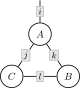
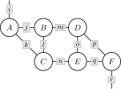

WiringDiagrams.jl
WiringDiagrams.jl is a high-performance Julia library for working with wiring diagrams and their algebras.
Wiring Diagrams
A wiring diagram is a combinatorial representation of a class of functions. For example, consider the diagram $d$ shown below.

This diagram could represent the projected intersection of relations
\[ D := \{i : (i, j, k) ∈ A \text{ and } (k, l) ∈ B \text{ and } (l, j) ∈ C\}\]
... or the summed product of arrays
\[ D_i := \sum_j \sum_k \sum_l A_{ijk} \times B_{kl} \times C_{lj}\]
... or the infimized sum of convex functions
\[ D(i) := \inf_j \inf_k \inf_l A(i, j, k) + B(k, l) + C(l, j)\]
and so on and so forth. Each of these different interetations is specified by a wiring diagram algebra. Algebras are higher-order functions that transform wiring diagrams into functions. For any algebra $a$, we can write
\[ D := a(d)(A, B, C).\]
Example
julia> using OMEinsum, WiringDiagrams
julia> A = rand(2, 3, 4); B = rand(4, 5); C = rand(5, 3);
julia> d = WiringDiagram(
[['i', 'j', 'k'], ['k', 'l'], ['l', 'j']],
['i'],
Dict('i' => 2, 'j' => 3, 'k' => 4, 'l' => 5),
)
3-box FWiringDiagram{Int64, Int64}:
[2]
└─ [2, 3, 4]
└─ [4, 5]
└─ [5, 3]
julia> a = ArrayAlgebra{Array{Float64}}()
ArrayAlgebra{Array{Float64}}()
julia> D = a(d)(A, B, C)
2-element Vector{Float64}:
4.765630333539594
6.775309980242036Dendrograms
Applying algebras to large wiring diagrams can be expensive. Consider the diagram $d$ shown below.

If each index has ten dimensions, then this tensor contraction requres $10^{10}$ floating point operations. We can address this problem by factorizing this wiring diagram into a tree of smaller wiring diagrams. The resulting object is called a dendrogram.
Example
julia> OMEinsum, WiringDiagrams
julia> A = 0.1rand(10, 10, 10); B = 0.1rand(10, 10, 10); C = 0.1rand(10, 10, 10);
julia> D = 0.1rand(10, 10, 10); E = 0.1rand(10, 10, 10); F = 0.1rand(10, 10, 10);
julia> d = WiringDiagram(
[['i', 'j', 'k'], ['j', 'l', 'm'], ['k', 'l', 'n'],
['m', 'o', 'p'], ['n', 'o', 'q'], ['p', 'q', 'r']],
['i', 'r'],
Dict('i' => 10, 'j' => 10, 'k' => 10, 'l' => 10, 'm' => 10,
'n' => 10, 'o' => 10, 'p' => 10, 'q' => 10, 'r' => 10),
)
6-box FWiringDiagram{Int64, Int64}:
[10, 10]
└─ [10, 10, 10]
└─ [10, 10, 10]
└─ [10, 10, 10]
└─ [10, 10, 10]
└─ [10, 10, 10]
└─ [10, 10, 10]
julia> a = ArrayAlgebra{Array{Float64}}()
ArrayAlgebra{Array{Float64}}()
julia> @time G = a(d)(A, B, C, D, E, F);
15.653926 seconds (74 allocations: 4.812 KiB)
julia> f = Dendrogram(log2, d)
6-box FDendrogram{Int64, Int64}:
[10, 10]
└─ [10, 10, 10]
└─ [10, 10, 10]
└─ [10, 10, 10]
└─ [10, 10, 10]
└─ [10, 10, 10]
└─ [10, 10, 10]
julia> @time G = a(f)(A, B, C, D, E, F);
0.000269 seconds (979 allocations: 683.359 KiB)Algebras
In order to define a wiring diagram algebra, create a concrete subtype of AbstractAlgebra
struct MyAlgebra{A} <: AbstractAlgebra{A} endand define a method for the function apply.